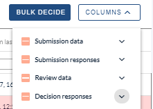
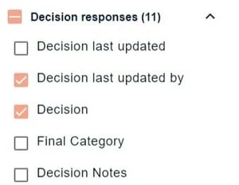
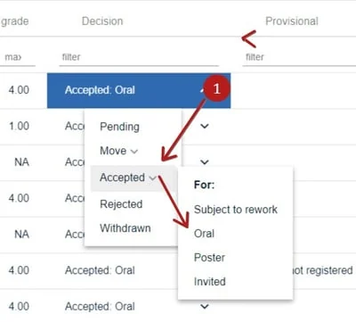
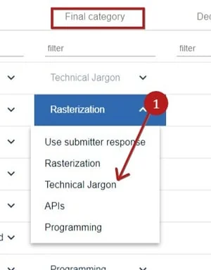
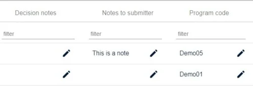
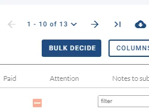
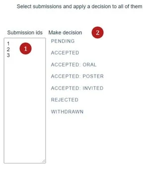

Recording decisions: accept, reject or withdraw
For event organisersNot an organiser?
You can record a decision in the Decisions Table. Committee Members can also make decisions if permitted. Although the interface is slightly different, the process is the same as below.#
NB Go to Event dashboard → Abstract Management → Decisions → Table
Skip to Making bulk decisions
This will access the Decisions Table.
Click on Columns to the right hand of the table to reveal the groups of data: Choose which fields you would like to view in table from the first three - Submission data, Submission responses, and Review data.

The bottom group, Decision responses, contains the fields where you will make your decisions (with the exception of decision last updated, which is generated automatically). These fields are determined by Decision form.
Tick Decision, as well as the columns in which you would like to enter data.

Recording a decision
All the decision response columns will appear in the right hand side of the table. To record a decision for a submission, choose the selected row and scroll to the Decisions column. Click the dropdown fields and select the option that matches your decision(s). Changes are saved automatically.
NB: The subset of options under Accepted, are determined by acceptance types.

Choose the Final Category in the next column.
NB: The Final Category fields are automatically populated by the Category question in the Submission form.

The remaining default decision fields are as follows:

Decision notes: Click on the pencil icon to add any notes. These will be visible to admin and committee only.
Notes to submitter: Enter any notes that you might want to include for the submitter. These can be added to emails as a merge field, when sending out notifications.
Program Code: This can be used to give custom numbers to the submissions and will overwrite the submission ID.
Make bulk decisions
To apply a decision to a number of submissions, click on Bulk Decide,

Enter the ID numbers of the submissions you wish to apply the decision to, then choose the relevant decision from the options.

Common questions#
Can I make decisions as an administrator?#
Yes - admins have full permissions to make decisions on submissions.
Didn't solve it? Ask our support team
No question is too small, and there's no charge for asking. Raise a ticket and someone who knows the software will pick it up.
Did this page solve it?
Thanks — this helps us fix it.